在首页余额卡下方新增两张卡片，均已在实际设备上跑通真实接口：
| 模块 | 行为 | 状态 |
|---|---|---|
| 今日用量 | 显示当天按本机余额采样推算的用量金额、采样次数、覆盖时间区间；采样不足时显示 — 并说明原因 |
已实现并验证 |
| 计费时段 | 显示当前处于高峰还是错峰、错峰折扣比例、距下次时段切换的倒计时，以及高峰时段表 | 已实现并验证 |
| 数据落库 | 新增 balance_samples 表，数据库 v1→v2 增量迁移，不破坏已保存的 API Key |
已实现并验证 |
| 单元测试 | 新增 21 个用例（峰谷判定 13 + 用量计算 8），累计 40 个 JVM 单测全部通过 | 40 / 40 通过 |
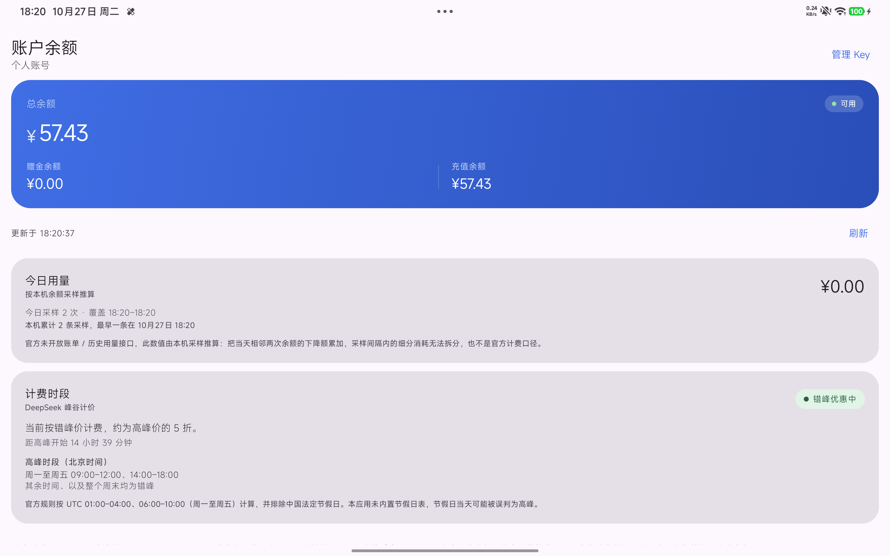
DeepSeek 官方 API（api-docs.deepseek.com）目前公开的端点共 10 个，全部是对话/补全、文件、模型列表与余额查询，其中：
GET /user/balance 只返回当前时刻的账号级余额快照（总额、赠金、充值），不带时间维度；每次余额查询成功，落一条采样（币种、总额、赠金、充值额、时间戳）。「今日用量」由当天采样序列推出：
// 今日 = 北京时间 00:00 起，按时间升序 usage = 0 for i in 1 until samples.size: delta = samples[i-1].total - samples[i].total if delta > 0: usage += delta // 余额下降 → 计入用量 if delta < 0: hasRecharge = true // 余额上升 → 视为充值，跳过
把「上升」单独标记而不是相互抵消，是为了避免一笔充值把当天真实消耗抹掉。UI 上会额外提示「期间检测到充值，余额上升的部分未计入用量」。
"Off-peak rates are half of the peak rates. Peak hours are 01:00 - 04:00 and 06:00 - 10:00 UTC, Monday through Friday, excluding Chinese public holidays. All other hours are off-peak, including weekends and Chinese public holidays in full."
来源：DeepSeek API Docs · Models & Pricing（2026 年 10 月核对）
| 时段 | 北京时间 | UTC | 价格 |
|---|---|---|---|
| 高峰 | 周一至周五 09:00–12:00、14:00–18:00 | 01:00–04:00、06:00–10:00 | 标准价 |
| 错峰 | 其余全部时间，含整个周末 | — | 标准价的 50% |
[01:00, 04:00)，所以 04:00 整点已经算错峰；| 文件 | 作用 |
|---|---|
domain/billing/PeakHours.kt | 峰谷判定与「下次状态翻转」计算，纯函数、无 Android 依赖 |
domain/model/DailyUsage.kt | 今日用量领域模型 + DailyUsageCalculator（只累加下降段） |
data/local/entity/BalanceSampleEntity.kt | 采样表实体，金额以十进制字符串存储 |
data/local/dao/BalanceSampleDao.kt | 按币种+时间范围查询、最早采样时刻、过期清理 |
data/repository/BalanceSampleRepository.kt | 写入采样、按「今日」聚合、裁剪历史 |
data/local/DeepPocketDatabase.kt | 版本 1→2，手写 MIGRATION_1_2 建表建索引 |
ui/home/HomeViewModel.kt | 查询成功后落采样、刷新统计、30 秒峰谷 ticker |
ui/home/HomeScreen.kt | TodayUsageCard、PeakWindowCard 两张卡片 |
CREATE TABLE balance_samples ... 与建索引，不触碰 api_keys 表，
也没有使用破坏性迁移。实测升级后 Key 仍在、余额照常查询成功。
| 测试类 | 用例数 | 覆盖内容 |
|---|---|---|
BalanceRepositoryTest | 19 | HTTP 200/401/402/422/429/5xx、超时、畸形 JSON、金额非数字、域名白名单 |
PeakHoursTest | 13 | 窗口内/外、边界左闭右开、周末全天错峰、跨周末翻转、北京时间窗口换算 |
DailyUsageCalculatorTest | 8 | 空/单条采样、下降累加、充值跳过、混合序列、乱序输入、覆盖区间 |
10 / 10 通过 在 23046RP50C（Android 17）上真实运行，包含 Android Keystore 真实加解密与 Room 真实落库：
AEADBadTagException；sk- 与原文、同一时刻只有一把 Key 激活、删除激活项自动回退、改名不影响密钥、过短 Key 被拒。assembleDebug 成功，APK 12.74 MB；testDebugUnitTest 全绿；真机冷启动约 1.7 秒。
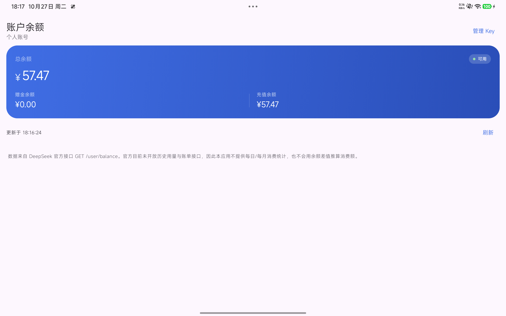
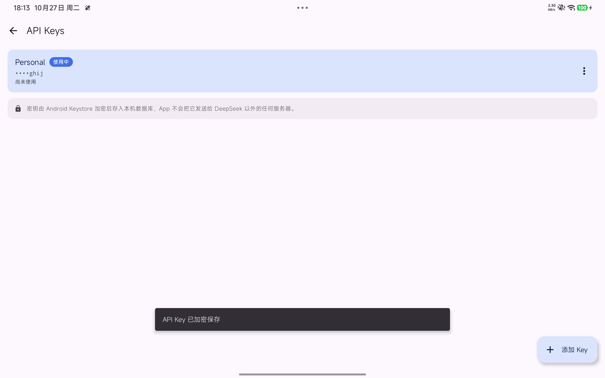
| 限制 | 影响与处理 |
|---|---|
| 无官方用量接口 | 今日用量是采样推算值，不是计费口径；已在卡片内与页脚双重标注 |
| 采样是离散的 | 两次刷新之间的多笔消耗会合并；不运行 App 期间完全无数据 |
| 不内置节假日表 | 法定节假日可能被误判为高峰；已在 UI 明确写出 |
| 余额是账号级 | 多 Key 共享余额，无法拆分「每个 Key 用了多少」，故未提供该维度统计 |
| targetSdk 36 | compileSdk 37 以匹配 2026 年 androidx 要求，targetSdk 保守停在 36 以规避 Android 17 行为变更 |
功能层面已经齐了，等你确认这张报表后进入界面美化阶段，计划包括：
strings.xml，为后续多语言留口；按你后来的要求补上的三项能力，设置一次即持久保存，重启 App 后依然生效。
| 能力 | 行为 | 状态 |
|---|---|---|
| 自定义刷新间隔 | 关闭 / 15 秒 / 30 秒 / 1 分钟 / 5 分钟 / 15 分钟六档，改完立刻生效并写入 DataStore | 已实现并验证 |
| 后台巡检 | App 不在前台时由 WorkManager 每 15 分钟查一次余额（系统最小周期），可开关 | 已实现并验证 |
| 余额预警 | 余额低于设定阈值时发本地通知；同一段低位只提醒一次，回到阈值以上后再次跌破会重新提醒 | 已实现并验证 |
这不是偷懒，是 Android 的硬性规则：应用在后台无法按秒级定时轮询，
WorkManager 的周期任务最小间隔就是 15 分钟。所以设置页里
秒级的刷新间隔只在前台生效，后台交给 WorkManager，
两者在界面上分别写明，不含糊其辞。
| 验证项 | 结果 |
|---|---|
| 单元测试 | 47 个全部通过（新增 7 个专门覆盖预警去重规则：未设阈值、余额未知、首次跌破、重复跌破、回升复位、等于阈值、再次跌破） |
| 自动刷新生效 | 设为 30 秒后静置 72 秒，「更新于」从 18:30:06 自动走到 18:31:34，采样条数 12 → 15 |
| 预警通知真实送达 | dumpsys notification 抓到 pkg=com.ybdsj.deeppocket.debug id=1001 channel=balance_alert，标题「DeepSeek 余额偏低」，正文「当前 ¥56.91，已低于阈值 ¥60.00」 |
| 后台任务真实排程 | dumpsys jobscheduler 中出现 #BalanceCheckWorker#，SystemJobService 已注册 |
| 设置持久化 | force-stop 杀进程后冷启动，30 秒 / 后台巡检开 / 阈值 60 元全部保留 |
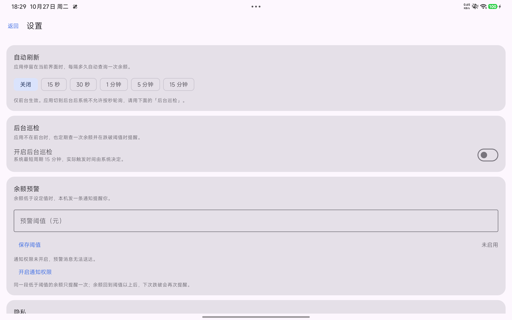
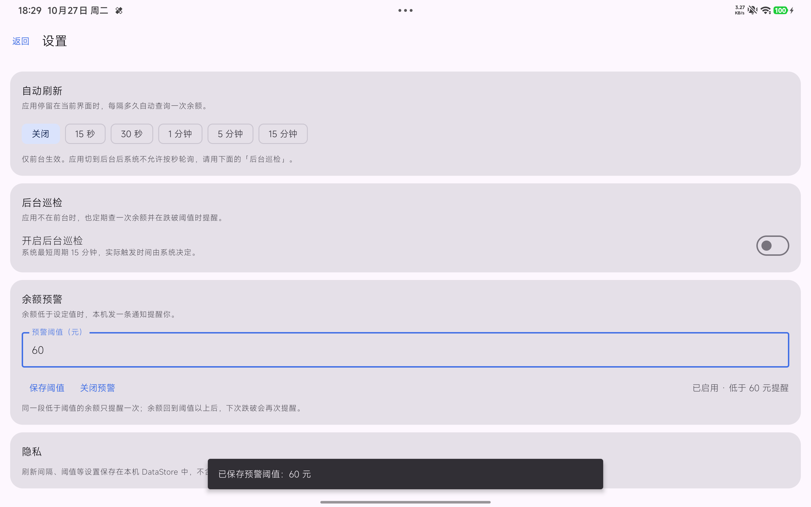
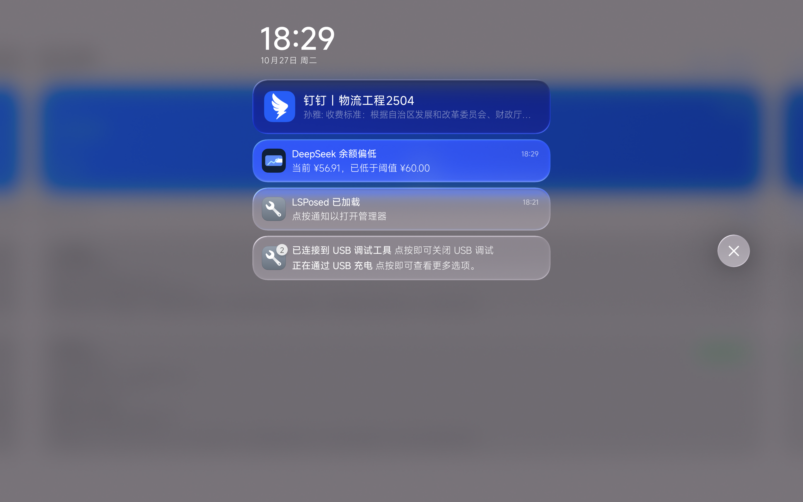
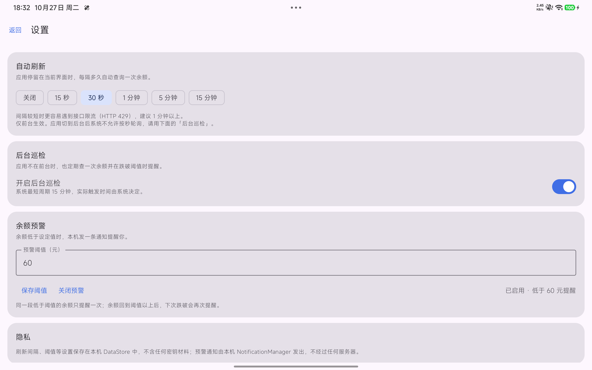
官方定价页写得很清楚：高峰是 UTC 01:00–04:00 与 06:00–10:00，周一至周五， 且排除中国法定节假日；其余时间（含整个周末、整个法定节假日）都是错峰。 也就是说，「今天是不是工作日」不只看星期几，还要看它是不是中国的法定节假日或调休上班日。
你问过能不能读日历，我当时否掉了，理由有四条：
READ_CALENDAR 授予的是读取设备上全部日程的权限，为了判断节假日索要这个权限属于过度授权，违反最小权限原则。于是改成内置一张静态表，零新增权限：数据来自国务院办公厅 2025-11-04 发布的《关于 2026 年部分节假日安排的通知》，并抓取中国政府网与人民网两个来源交叉核对，文字一致。
| 节日 | 放假区间 | 调休上班 |
|---|---|---|
| 元旦 | 1/1（四）– 1/3（六），3 天 | 1/4（日） |
| 春节 | 2/15（日）– 2/23（一），9 天 | 2/14（六）、2/28（六） |
| 清明节 | 4/4（六）– 4/6（一），3 天 | — |
| 劳动节 | 5/1（五）– 5/5（二），5 天 | 5/9（六） |
| 端午节 | 6/19（五）– 6/21（日），3 天 | — |
| 中秋节 | 9/25（五）– 9/27（日），3 天 | — |
| 国庆节 | 10/1（四）– 10/7（三），7 天 | 9/20（日）、10/10（六） |
这是最容易被漏掉、一漏就错的地方：2026-10-10 是周六，但因为国庆调休要上班。 如果只按星期几判断，这天会被当成周末而算成错峰——而它其实要按高峰价计费。 所以表里同时存两份数据：33 个放假日 + 6 个调休上班日。
// HolidayCalendar.kt — 三态判定，顺序不能换 fun isWorkingDay(date: LocalDate): Boolean = when { date in holidays -> false // 法定节假日 → 全天错峰 date in makeupWorkdays -> true // 调休补班 → 当工作日算 else -> date.dayOfWeek.value <= 5 }
| 验证项 | 结果 |
|---|---|
| 单元测试 | 新增 15 个：解析、扁平化、覆盖边界、假日非工作日、补班日算工作日、普通周末、普通周一、国庆窗口判错峰、补班日窗口判高峰、跨 9 天长假的状态翻转、超期降级、真实资产校验（33 放假日 / 6 补班日 / version=2026.1） |
| 真机显示 | 计费时段卡片出现「今天是工作日：高峰只在上面两个时段」，底部标注「已内置官方节假日安排（2026.1，覆盖至 2026-12-31），含调休上班日，表内日期判定准确」 |
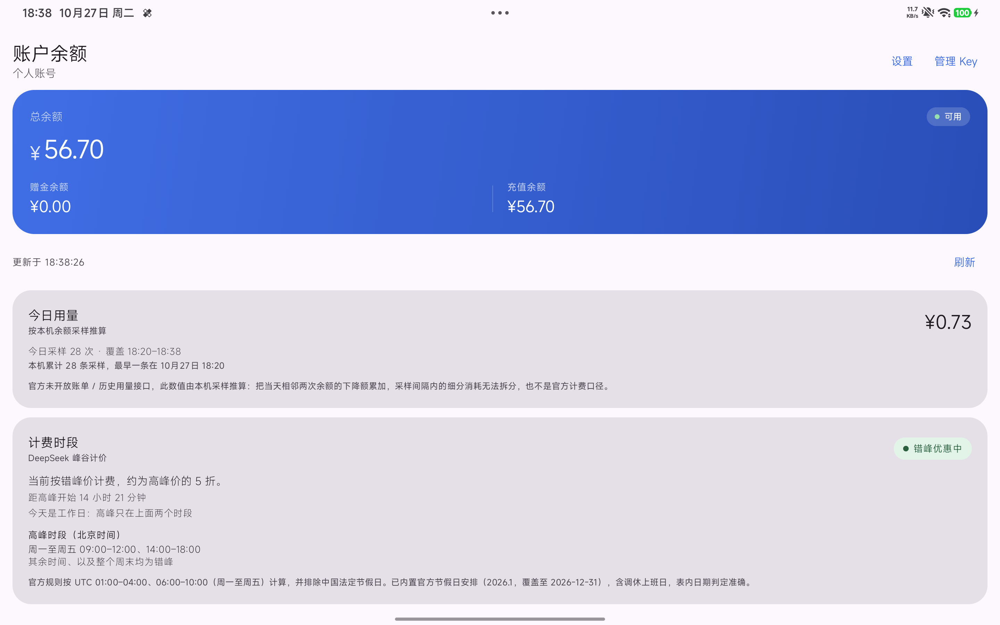
assets/cn_holidays.json，不需要改代码。
你提的两件事——「系统可能在后台冻结应用」和「日志会不会打印完整 Key」——分别是这样处理的。
设置页新增「电池优化」卡片，实时读取 PowerManager.isIgnoringBatteryOptimizations()：
未加入白名单时显示「仍受电池优化限制」并给出「去设置」，已加入时显示「已豁免电池优化」。
每次回到该页都会重新读一次，用户在系统设置里改完切回来能立刻看到变化。
REQUEST_IGNORE_BATTERY_OPTIMIZATIONS，
而该权限只允许闹钟、VoIP 等少数类别的应用使用，普通应用声明后上架会被拒。
所以这里只做两件事：读取状态（无需权限）、打开系统电池优化列表（无需权限），
是否加白名单由用户自己决定。
| 验证项 | 结果 |
|---|---|
| 未加入白名单 | 卡片显示「仍受电池优化限制」+「去设置」按钮 |
| 点击「去设置」 | 真实跳到 com.android.settings/.Settings$AppBatteryUsageActivity |
| 加入白名单后 | 切后台再回前台，卡片变为「已豁免电池优化」，「去设置」按钮消失 |
| 开机后能否恢复 | 周期任务持久化在 WorkManager 数据库；WorkManager 自带 RescheduleReceiver 监听 BOOT_COMPLETED（已在打包后的 AndroidManifest 中确认存在）；App 启动时再 sync 一次作为双保险。未做真实重启验证——重启平板会打断你正在用的设备，这里如实标注。 |
Log.d/i/w/e 调用，也没有 OkHttp 的 HttpLoggingInterceptor，即不存在把 Authorization 头写进 logcat 的代码路径。ApiKeyLeakTest）：对 401 / 429 / 500 / 响应体畸形 / 网络中断 / 成功响应 / 空 Key 七种情形，断言 userMessage、异常 message、toString() 都不含 Key、不含「Bearer」、不含 Key 的尾段片段。任何一次重构只要把 Key 拼进异常就会立刻变红。Bearer / Authorization / sk-：无本应用记录（命中的 4 条均为系统 WindowManager 的 task-snapshot 字样，属正则误匹配）。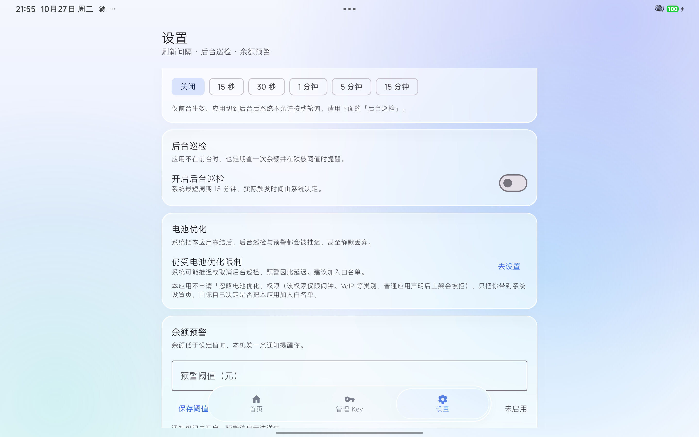
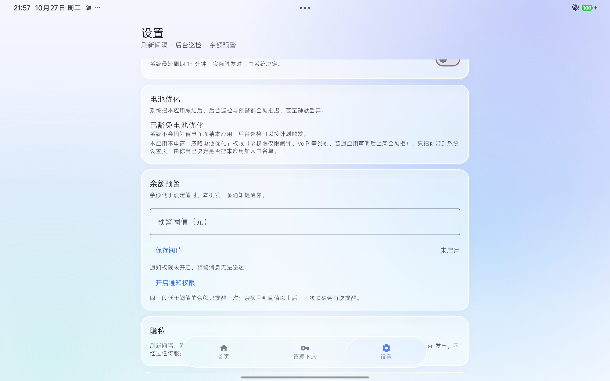
| 阶段 | 单元测试 | 说明 |
|---|---|---|
| M4 完成时 | 40 | 网络 19 + 峰谷 13 + 用量 8 |
| 加设置与预警后 | 47 | +7 预警去重规则 |
| 加节假日表后 | 62 | +15 节假日表 |
| 加密钥泄漏回归后 | 69 | +7 泄漏回归，全部通过、0 失败 0 跳过 |
视觉部分按你的要求放在功能稳定之后做，主要三项：底部三段式导航（首页 / 管理 Key / 设置）、 液态玻璃卡片与实时背景模糊（可在设置页一键关闭，Android 12 以下自动降级为不透明配色）、 以及自适应启动图标与桌面显示名称。
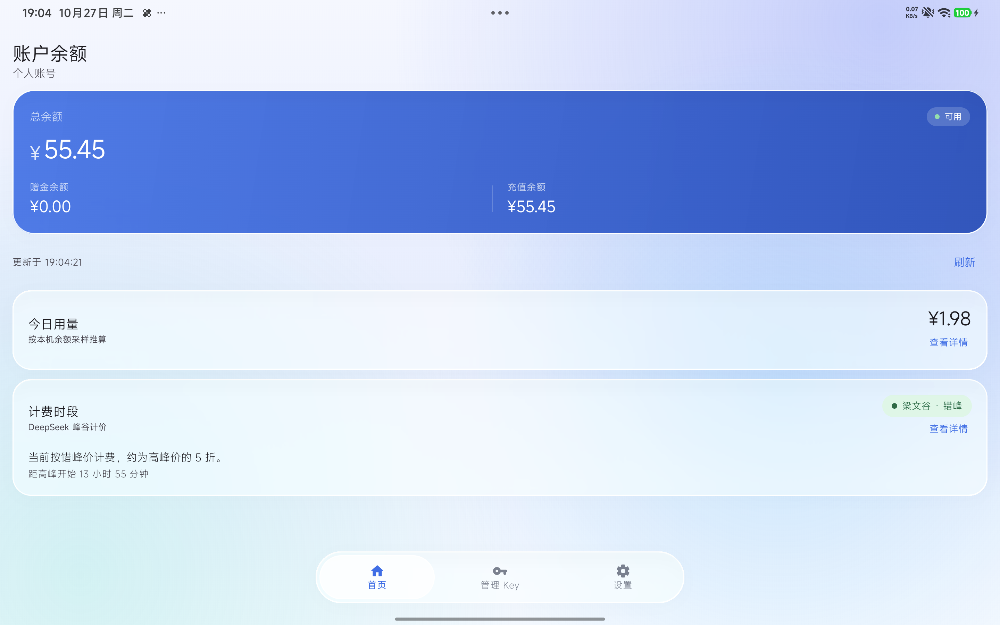
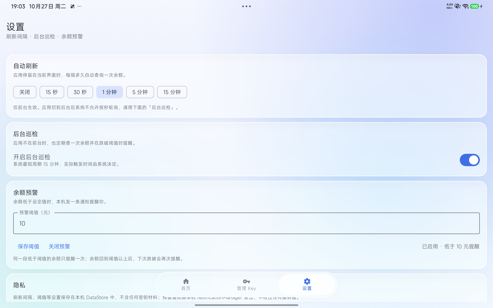
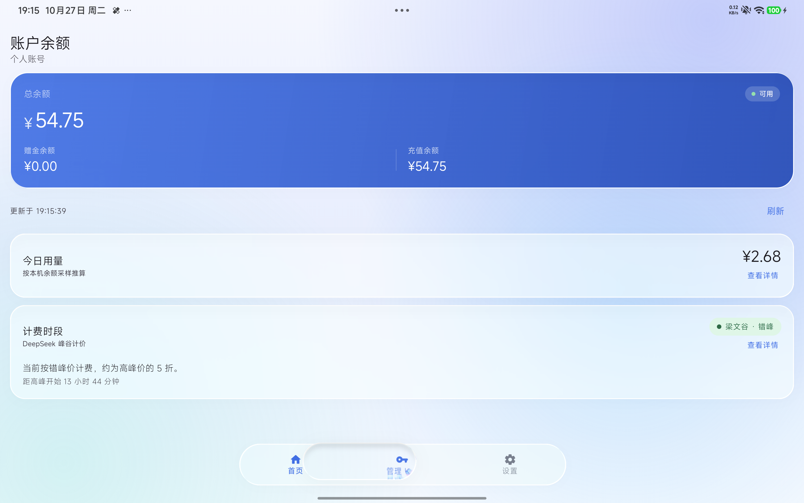